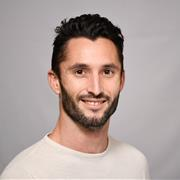
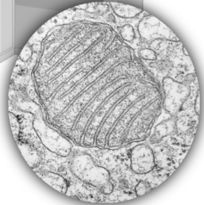
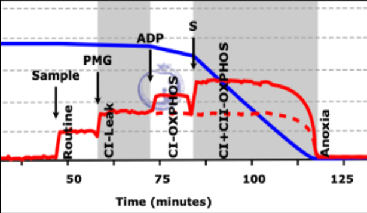

Define the question
Turn a complex biological or technical challenge into a focused, mechanistic research question.
Jules Devaux helps research groups, health innovators, and blue economy teams turn mitochondrial biology into focused, testable programmes.
See where this applies
The work combines comparative physiology, mitochondrial bioenergetics, experimental design, and translational thinking to clarify what is happening, what can be measured, and what should be tested next.
Engagements can begin with a feasibility question, a protocol or assay review, a research strategy, or a collaborative programme. The standard is evidence first: distinguish established findings from active research and early concepts, then build an appropriate validation path.
Turn a complex biological or technical challenge into a focused, mechanistic research question.
Shape experiments, measurements, and decision gates that are credible in the intended setting.
Connect promising biology with the partners, constraints, and validation needed for real use.
Develop mitochondrial measurement strategies, mechanistic study designs, and evidence pathways around ischaemia reperfusion injury and machine perfusion.
Connect mitochondrial and cardiac physiology with practical questions about thermal stress, growth, welfare, and resilience in changing environments.
Stress-test biological assumptions, identify meaningful signals, and frame feasibility studies for mitochondrial monitoring concepts.
Help teams position a programme, identify the next experiment, assemble collaborators, and make the translation boundary explicit.
Examples show how the same core expertise can be applied across clinical translation, primary sector research, fundamental science, and venture formation.
Applying mitochondrial and cardiac physiology to questions of stress resilience and performance in aquaculture species.
Collaborative primary sector research Read the project →
CCRG · clinical translationDesigning research around mitochondrial injury, machine perfusion, and the biological signals that matter during transplantation.
Critical Care Research Group collaboration Read the project →
Marsden Fast Start · discoveryA fundamental science programme investigating extraordinary mitochondrial energy delivery in high performance flight muscle.
Independent research programme Read the project →
MitoSpectra · venture conceptExploring robust optical measurement and data quality methods for mitochondrial signals in demanding real world workflows.
Early stage research and development Read the project →
MitoSafe · preservation conceptA nature informed feasibility programme inspired by organisms that endure freezing and desiccation.
Early stage concept under development Read the project →
Comparative biology · foundationMechanistic research across extreme animal systems creates sharper hypotheses for health, resilience, and biotechnology.
Published work and ongoing research Read the project →
The platform distinguishes its peer-reviewed findings from active studies and exploratory opportunities. Any clinical, conservation, or commercial application must earn its place through appropriate validation, partnership, ethics, and regulatory pathways.


Images are drawn from Jules Devaux’s research materials and are presented as methods and research context—not as clinical claims or final outcomes.
CCRG profile on Jules’ comparative physiology and translational mitochondrial work.
Read story ↗American Heart AssociationInterview on shark cardiovascular biology, hypoxia tolerance, and mitochondrial research.
Read interview ↗CRIKEY 2025 · CCRGRecognition for the S.H.A.R.K. Institute pitch at the CRIKEY Summit.
Read story ↗The work is advanced through institutional research, clinical and sector collaboration, and a global community for mitochondrial ecophysiology.
EcoMito is a journal club and international community centred on mitochondria and ecophysiology, with recorded meetings and opportunities for early-career researchers to connect.
University of Auckland research network
Tony Hickey ↗Anthony Phillips ↗Jennifer Miles-Chan ↗Chris Carrie ↗Kerry Loomes ↗Chris Hedges ↗Toan Pham ↗Amelia Power ↗For research partnerships, consultancy, programme design, feasibility work, or speaking enquiries.
Contact via University of Auckland profile